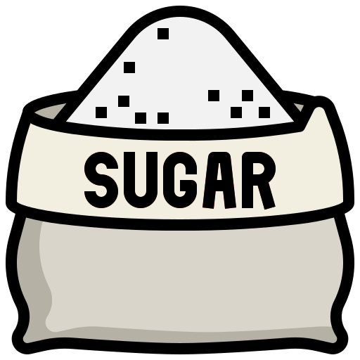
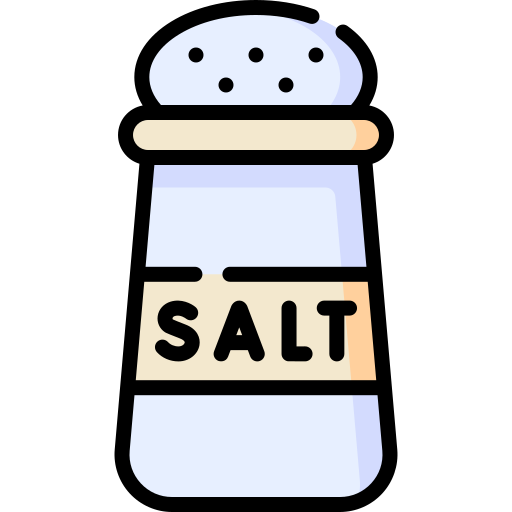

(mouse over for amounts)

1.5 cups
3.5 teaspoons

1 tablespoon

0.25 teaspoons

1.25 cups
3 tablespoons

1 egg
Step 1
Sift flour, baking powder, sugar, and salt together in a large bowl.
Make a well in the center and add milk, melted butter, and egg.
Mix until smooth.
Step 2
Heat a lightly oiled griddle or pan over medium-high heat.
Step 3
Pour or scoop the batter onto the griddle, using approximately 1/4 cup for each pancake.
Step 4
Cook until bubbles form and the edges are dry, about 2 to 3 minutes.
Flip and cook until browned on the other side. Repeat with remaining batter.
TLDR
- Sift the dry ingredients together.
- Make a well, then add the wet ingredients. Stir to combine.
- Scoop the batter onto a hot griddle or pan.
- Cook for two to three minutes, then flip.
- Continue cooking until brown on both sides.